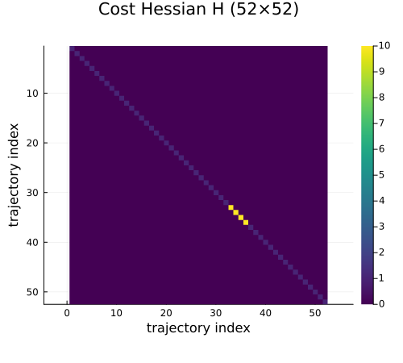
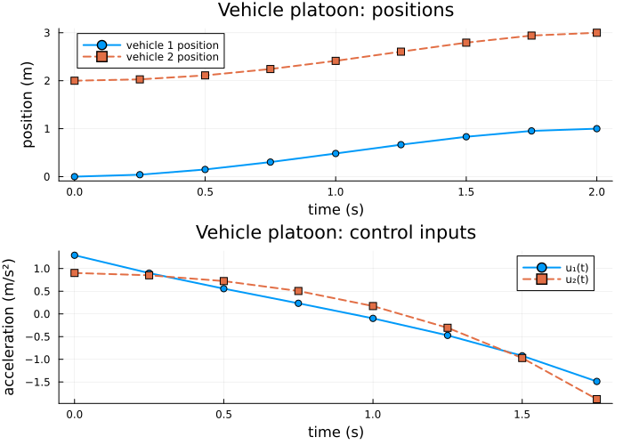

Controlled Trajectory Examples: 2 — Vehicle Platoon
This is the second example in the four-part controlled-trajectory progression. The first example solved a single-agent optimal-control problem for a double integrator. Here we scale to a multi-agent setting: a longitudinal vehicle platoon on a path graph.
Physical system
Each vehicle $i$ in the platoon is modelled as a point mass with position $p_i$ and velocity $\dot{p}_i$ driven by an acceleration command $a_i$:
\[\dot{x}_i = \begin{bmatrix} 0 & 1 \\ 0 & 0 \end{bmatrix} x_i + \begin{bmatrix} 0 \\ 1 \end{bmatrix} u_i, \qquad x_i = \begin{bmatrix} p_i \\ \dot{p}_i \end{bmatrix}, \quad u_i = a_i.\]
For a two-vehicle platoon, we stack the individual states into one composite system with state $x = [x_1^\top, x_2^\top]^\top \in \mathbb{R}^4$ and control $u = [u_1, u_2]^\top \in \mathbb{R}^2$:
\[A_c = \begin{bmatrix} 0 & 1 & 0 & 0 \\ 0 & 0 & 0 & 0 \\ 0 & 0 & 0 & 1 \\ 0 & 0 & 0 & 0 \end{bmatrix}, \qquad B_c = \begin{bmatrix} 0 & 0 \\ 1 & 0 \\ 0 & 0 \\ 0 & 1 \end{bmatrix}.\]
Encoding this as an EuclideanSheaf with two vertices (one per vehicle), each carrying a 2-dimensional stalk, makes the multi-agent structure explicit and is the natural first step toward the consensus and formation-control direction.
References:
- Ploeg, Scheepers & van de Wouw (2014), "Design and experimental evaluation of cooperative adaptive cruise control", IEEE Trans. Intell. Transp. Syst.
- Lewis, Vrabie & Syrmos (2012), Optimal Control, 3rd ed., Ch. 5.
using CellularSheaves
using LinearAlgebra
using BlockArrays
using Plots
using SparseArraysStep 1: Define the stacked continuous-time model
Two decoupled double integrators in block-diagonal form. The base sheaf uses two vertices, each with a 2-dimensional stalk.
Ac = [0.0 1.0 0.0 0.0;
0.0 0.0 0.0 0.0;
0.0 0.0 0.0 1.0;
0.0 0.0 0.0 0.0]
Bc = [0.0 0.0;
1.0 0.0;
0.0 0.0;
0.0 1.0]4×2 Matrix{Float64}:
0.0 0.0
1.0 0.0
0.0 0.0
0.0 1.0Step 2: Build the ControlledTrajectorySheaf
Two vertices, each with a 2-dimensional stalk, give a total state dimension of 4. The ZOH discretization handles the whole stacked system at once.
h = 0.25 # sample period (seconds)
k = 8 # number of time steps
F = EuclideanSheaf{Float64}([2, 2]) # two vertices, each 2D stalk (one per vehicle)
ts = ControlledTrajectorySheaf(F, Ac, Bc, h, k)
n = ts.state_dim # 4 (2 vehicles × 2 states)
m = ts.control_dim # 2 (one control per vehicle)
println("State dimension n = ", n)
println("Control dimension m = ", m)
println("Steps k = ", k)State dimension n = 4
Control dimension m = 2
Steps k = 8Step 3: Fix endpoint states
Vehicle 1 moves from position 0 to position 1; vehicle 2 moves from position 2 to position 3. Both start and end at rest.
x1 = [0.0, 0.0, 2.0, 0.0] # [p1, v1, p2, v2] at t=1
xk1 = [1.0, 0.0, 3.0, 0.0] # [p1, v1, p2, v2] at t=k+14-element Vector{Float64}:
1.0
0.0
3.0
0.0Step 4: Assemble the LQR objective
Equal weight on all state coordinates and controls, with a heavier terminal penalty to encourage convergence to rest.
Q = Matrix{Float64}(I, n, n)
Ru = Matrix{Float64}(I, m, m)
Qf = 10.0 * Matrix{Float64}(I, n, n)
H, f, _ = lqr_objective(ts, Q, Ru; Qf=Qf)(sparse([1, 2, 3, 4, 5, 6, 7, 8, 9, 10 … 43, 44, 45, 46, 47, 48, 49, 50, 51, 52], [1, 2, 3, 4, 5, 6, 7, 8, 9, 10 … 43, 44, 45, 46, 47, 48, 49, 50, 51, 52], [1.0, 1.0, 1.0, 1.0, 1.0, 1.0, 1.0, 1.0, 1.0, 1.0 … 1.0, 1.0, 1.0, 1.0, 1.0, 1.0, 1.0, 1.0, 1.0, 1.0], 52, 52), [-0.0, -0.0, -0.0, -0.0, -0.0, -0.0, -0.0, -0.0, -0.0, -0.0 … -0.0, -0.0, -0.0, -0.0, -0.0, -0.0, -0.0, -0.0, -0.0, -0.0], 0.0)Visualize the block-diagonal structure of H. The ordering is [x₁, …, x{k+1}, u₁, …, uk]; each state block has size 4 (two vehicles × 2 DOF) and each control block has size 2.
p_H = heatmap(Matrix(H);
color=:viridis, colorbar=true,
title="Cost Hessian H ($(size(H,1))×$(size(H,2)))",
xlabel="trajectory index", ylabel="trajectory index",
yflip=true, aspect_ratio=:equal, size=(500, 450))
p_H
Step 5: Solve for the optimal trajectory
z_opt, α_opt, z_p, N = optimal_control_trajectory(ts, x1, xk1, H, f)
println("Free parameters r = ", size(N, 2))Free parameters r = 12Step 6: Extract and plot per-vehicle trajectories
The state ordering in each block is [p1, v1, p2, v2]. We unpack the position and velocity for each vehicle separately.
times_state = h .* (0:k)
times_control = h .* (0:k-1)
pos1 = [Array(z_opt[Block(t)])[1] for t in 1:k+1]
vel1 = [Array(z_opt[Block(t)])[2] for t in 1:k+1]
pos2 = [Array(z_opt[Block(t)])[3] for t in 1:k+1]
vel2 = [Array(z_opt[Block(t)])[4] for t in 1:k+1]
ctrl1 = [Array(z_opt[Block(k+1+t)])[1] for t in 1:k]
ctrl2 = [Array(z_opt[Block(k+1+t)])[2] for t in 1:k]
p_pos = plot(times_state, pos1;
lw=2, marker=:circle, label="vehicle 1 position",
xlabel="time (s)", ylabel="position (m)",
title="Vehicle platoon: positions")
plot!(p_pos, times_state, pos2;
lw=2, marker=:square, linestyle=:dash, label="vehicle 2 position")
p_ctrl = plot(times_control, ctrl1;
lw=2, marker=:circle, label="u₁(t)",
xlabel="time (s)", ylabel="acceleration (m/s²)",
title="Vehicle platoon: control inputs")
plot!(p_ctrl, times_control, ctrl2;
lw=2, marker=:square, linestyle=:dash, label="u₂(t)")
platoon_plot = plot(p_pos, p_ctrl; layout=(2, 1), size=(700, 500))
platoon_plot
Verification (converted to warnings)
Endpoint checks – issue warnings instead of failing the build.
if !(Array(z_opt[Block(1)]) ≈ x1)
@warn "Initial state not satisfied"
end
if !(Array(z_opt[Block(k + 1)]) ≈ xk1)
@warn "Terminal state not satisfied"
endDynamics consistency – report any violations as warnings.
for t in 1:k
xt = Array(z_opt[Block(t)])
xt1 = Array(z_opt[Block(t + 1)])
ut = Array(z_opt[Block(k + 1 + t)])
resid = norm(ts.Ad * xt + ts.Bd * ut - xt1)
if resid ≥ 1e-10
@warn "Dynamics violated at step $t (residual = $resid)"
end
end
println("All endpoint and dynamics checks completed (warnings, if any, were shown above).")All endpoint and dynamics checks completed (warnings, if any, were shown above).What this example adds
Compared with the double integrator, the platoon example introduces:
- A multi-agent base sheaf (two vertices, one per vehicle).
- A stacked state space that explicitly separates each agent's degrees of freedom, prefiguring the graph-structured systems in later examples.
- Multiple control inputs, one per vehicle.
The dynamics are still decoupled here: each vehicle's trajectory is solved independently within the same global optimization. The next example, Planar Quadrotor, keeps a single agent but increases state and control dimensions and introduces physically coupled state coordinates.